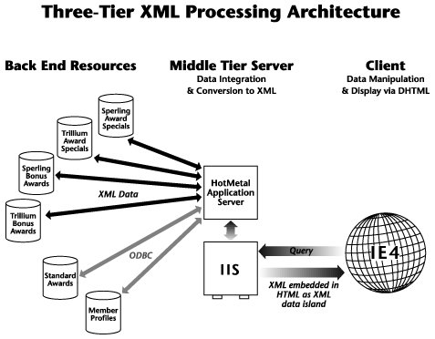

|
| ||
|
| ||
July 12, 1998
The Business Problem
The Role of XML
Solving the Problem with SoftQuad HoTMetaL Application Server and XML
Situation Overview
User Scenario
Behind the Curtain
XML Example
Information Flow Diagram
Airlines are facing a challenge. They need to increase sales but can't just compete on price. Thus, Frequent Flyer programs have become key to an airline's competitive advantage. One important aspect of these programs is a great Web site. Frequent Flyer sites should be able to build loyalty and generate incremental business while providing a pleasant experience for the business traveler. But they can't realize those results today because Frequent Flyers find the experience of visiting these sites very frustrating. The reasons are many: The sites are not fully personalized, are difficult to navigate through, are slow to return information, and are not able to combine data from various sources to present up-to-the minute options and opportunities. Sites are heavy on cool graphics, but light on pertinent information. Delays in retrieving information are substantial because typically only one server is handling all the traffic. It's hard for customers to decide which is worse, waiting on the phone for half an hour to speak to a representative or waiting online.
XML provides a flexible, standard way to exchange data between applications. Because Microsoft® Internet Explorer 4.0 knows how to handle XML data, for example, through data binding, the data can be easily presented in various forms and can be manipulated on the client without having to fetch another page from the Web server. In this scenario, for instance, all the bonus flights that originate from the member's home city are sent to the client, but only those that match the chosen destination are shown at any one given time. XML makes this possible because it provides unique tags to identify data.
XML also provides context for searching, making it easier for people, or computers, to find precise information rapidly. Thus a Frequent Flyer doesn't have to visit a series of screens to find information. Exact data on requirements and rewards is delivered immediately.
The Softland Air scenario shows how an airline uses the three-tier model to build a Frequent Flyer Web site that is fully interactive and that provides a productive and pleasurable experience for customers visiting it. The personalized data clearly conveys how many points a member has and exactly which trips he/she qualifies for. A member can also easily determine how many points are required for any given trip and how best to acquire them. Through this interaction customers are encouraged to increase their "paid for" travel and to stay loyal to their airline.
A business traveler wants to know if he has enough points to go on a vacation to Paris. He accesses his airline's Web site and selects "Frequent Flyer". He then enters his membership identification number. The next screen welcomes him and displays a table showing the number of frequent flyer points he has earned, and the destinations he qualifies for. The table is color-coded for easy analysis.
Because he is planning a trip to Paris, he selects Europe/Economy on the Standard Awards table. He knows he doesn't appear to have enough points but thinks there might be some other options. The chart indicates that he will need 60,000 points, 14,000 more than he currently has, and difficult to earn in a short time. He then chooses to look in Awards Specials for trips to Europe that require fewer points. These are flights that require a smaller number of points than usual. A table of possible destinations is displayed. He selects Paris/Economy.
He's in luck. One of Softland's partner airlines has a flight to Paris available that requires only 50,000 points. He clicks on this trip and is told to go to Planned Trips, which will tell him how to get bonus points on destinations he is already planning to visit. He selects a destination -- New York -- and the points/destination table is automatically updated showing that if he takes one of the partner airlines to New York, he'll have enough points for Paris. "Yes!" he exclaims as he calls the company travel agent to switch his existing booking from a competitor's airline.
This scenario shows how a middle tier server using XML as a structured information interchange protocol enables personalized aggregation and organization information from multiple remote databases and interactive delivery to client browsers based upon end-user requirements.
XML Data Island for Member Information
======================================
<XML ID = "customerInfoXML" TYPE = "text/xml">
<CUSTOMER
ID = "TheMember"
MEMBERID = "1AB345"
FIRST = "Bruce"
LAST = "Sharpe"
POINTS = "46000"
CITY = "Vancouver"
CONTINENT = "NA"/>
</XML>
DHTML Fragment to Initialize Welcome Message
============================================
<SCRIPT>
function InitDocument()
{
TheMember = document.all.item("TheMember");
ThePoints = TheMember.getAttribute("POINTS") * 1;
NewPoints = 0;
document.all.item("MemberFirstName").innerText =
TheMember.getAttribute("FIRST");
document.all.item("MemberPoints").innerText =
TheMember.getAttribute("POINTS");
SetAwardColors();
document.all.item("DisplayMessage").style.display = "";
}
</SCRIPT>
Fragment of HTML for Welcome Message
====================================
<P>Welcome back, <SPAN ID="MemberFirstName"></SPAN>. You currently
have <SPAN ID="MemberPoints" STYLE="color:#FD4C36"></SPAN> points.</P>

Did you find this material useful? Gripes? Compliments? Suggestions for other articles? Write us!
© 1999 Microsoft Corporation. All rights reserved. Terms of use.